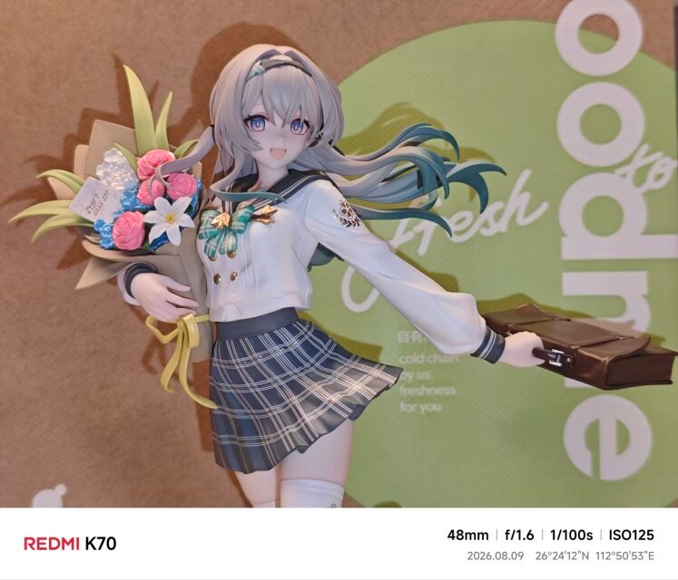
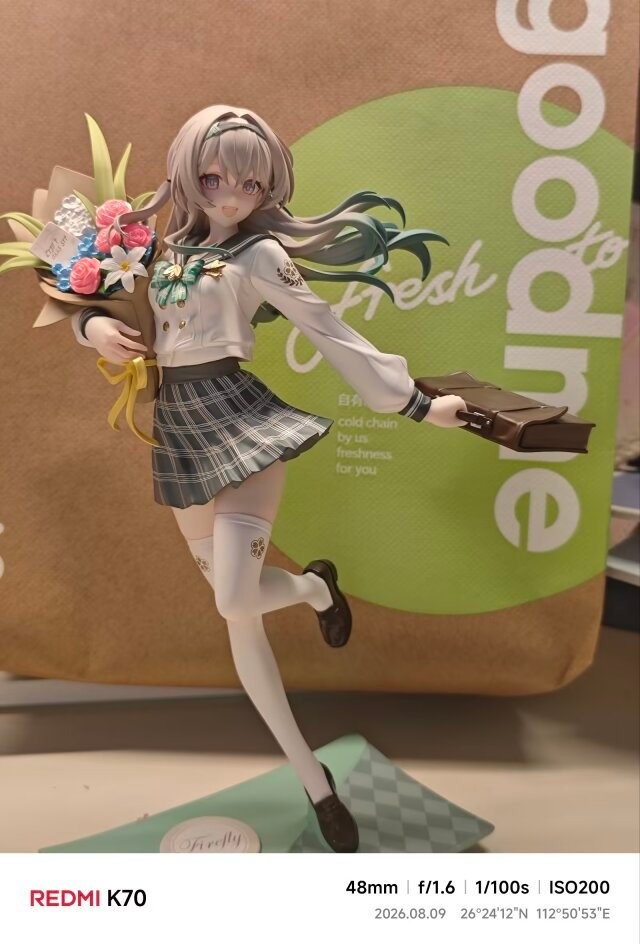

A-03 我喜欢的2026-09-18约 1 分钟 和流萤做同桌 A-03 如果是和流萤一起做同桌的话再读高中三年也不是不行这次不考南华，考清华[练剑.jpg]不对，应该和流萤一起考上交(〃∇〃) 近景：左手抱着花束，右手提着公文包。 全身：一只脚点地的站姿，底座上写着 Firefly。 崩坏：星穹铁道流萤手办 下一篇 · 更新research-reading 的设计思路上一篇 · 更早给学习留一点空白